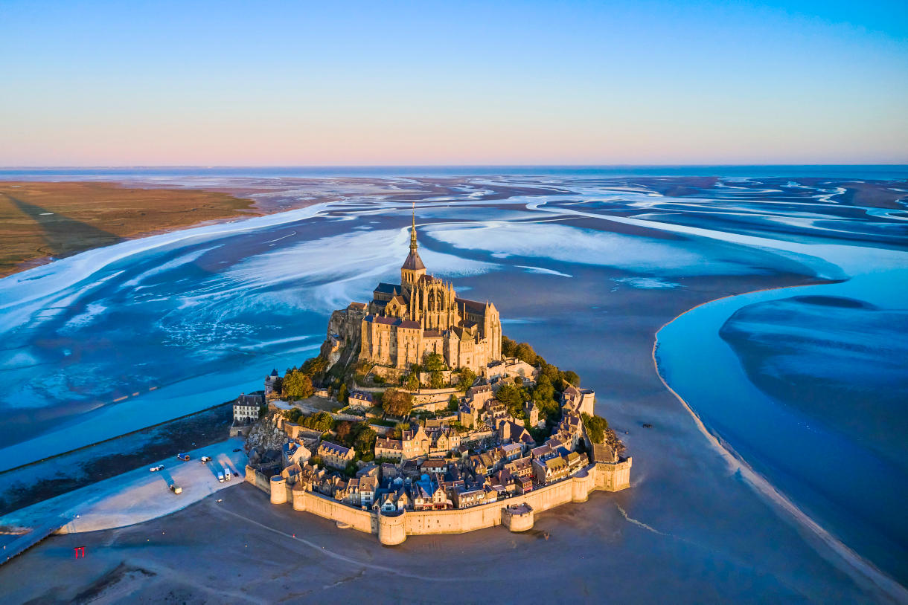
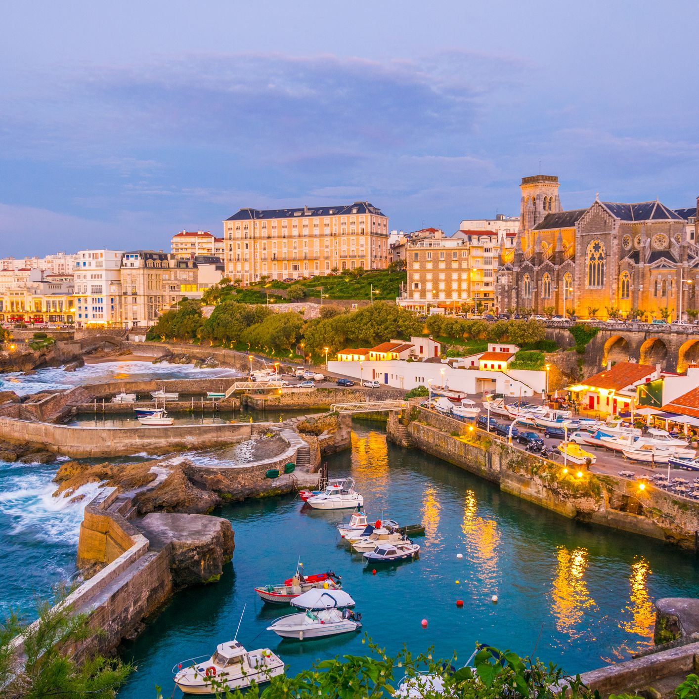
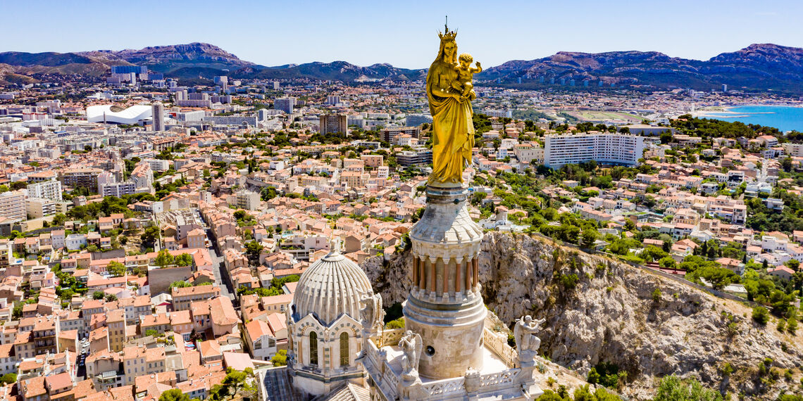

Versailles - Mont Saint Michel
It was 3 years ago. 5 of my friends and I had decided to undertake a road trip by bike which would leave from Versailles to arrive at Mont St Michel in 7 days. Not knowing what to expect we were somewhat stressed but impatient. In the end everything went well even if it was a real physical and mental ordeal. Some figures about the trip :
- 7 days
- 349,5 km
- 5 friends

Bordeaux - Biarritz
The following summer, delighted by the experience of Mont St Michel, we decided to do it again. But this time in the South and longer. It's decided we will leave Bordeaux to go to Biarritz. Not our first time the organization was easier. Good humor and sunshine accompanied this trip, although difficult times too.

La Rochelle - Marseille 💥
Accustomed to this type of trip, the question did not even arise whether or not we will undertake a trip this year. Destination and route:La Rochelle - Marseille (750 km). The challenge was daunting but surmountable.